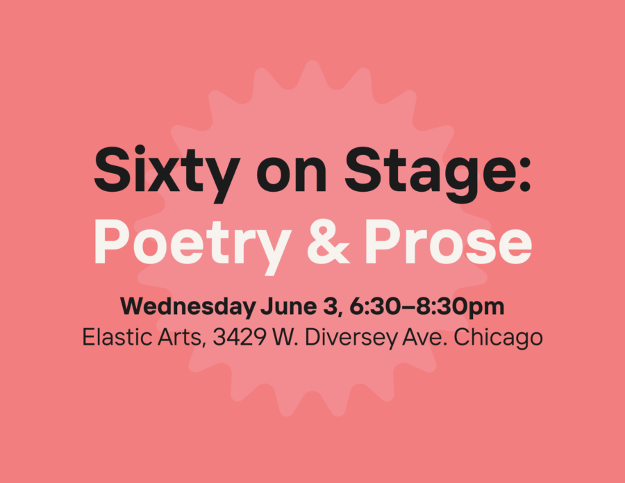

Sixty on Stage: Poetry & Prose!
Join Sixty Inches From Center at Elastic Arts to hear the latest from poets and creative writers recently published by Sixty Lit, including Vera Blossom, e’mon lauren, Diego Báez, Temperance Aghamohammadi, and Riley Yaxley.
This reading is presented as part of Sixty Lit, an effort that illuminates the brilliance of literary artists working in creative nonfiction, memoir, poetry, autotheory, and experimental or lyrical essays across the Midwest. Read the work of these artists and more here.
Sixty on Stage: Poetry & Prose
Wednesday June 3, 2026 | 6:30 – 8:30pm CST
Elastic Arts, 3429 W. Diversey Ave. #208 Chicago
RSVP HERE
Free and all are welcome!
Accessibility information: Masks are required for this event and will be provided. Elastic Arts is located on the second-floor without elevator access. There will be a live captioner and a livestream will be available through Elastic Arts’ website.